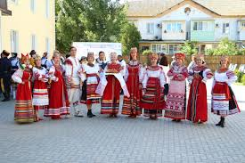

Численность населения
На 2024 год в Астрахани проживает около 475–490 тысяч человек. Если учитывать всю область, цифра приближается к 960 тысячам.
Интересно, что в последние годы население медленно сокращается: молодёжь уезжает в более крупные города, а рождаемость не всегда компенсирует убыль.
Динамика населения за последние годы
| Год | Население (тыс.) | Изменение |
|---|---|---|
| 2015 | 532.7 | ▼ 0.8% |
| 2018 | 523.8 | ▼ 0.7% |
| 2020 | 511.7 | ▼ 1.2% |
| 2022 | 498.3 | ▼ 1.3% |
| 2024 | 482.5 (оценка) | ▼ 1.1% |
Многонациональный коктейль
Астрахань — один из самых многонациональных городов России. Здесь живут:
Русские
~70% населения
Основа городского населения
Казахи
~14% населения
Крупнейшая диаспора, особенно в сельских районах
Татары
~7% населения
Влиятельная община с богатой историей
Другие народы
~9% населения
Армяне, азербайджанцы, ногайцы, калмыки, чеченцы
Религиозный состав
В городе мирно соседствуют:
- Православные храмы
- Мечети
- Буддийские хурулы
- Католические костёлы
Языки и традиции
Хотя официальный язык — русский, на улицах часто слышна татарская, казахская и кавказская речь.
Астраханские казаки берегут свои обычаи, а местные татары проводят яркий Сабантуй.
В области даже есть сёла, где до сих пор говорят на ногайском и калмыцком языках.
Основные культурные события
- Фестиваль "Астрахань многонациональная" (май)
- Казачий круг (сентябрь)
- Татарский Сабантуй (июнь)
- Казахский Наурыз (март)